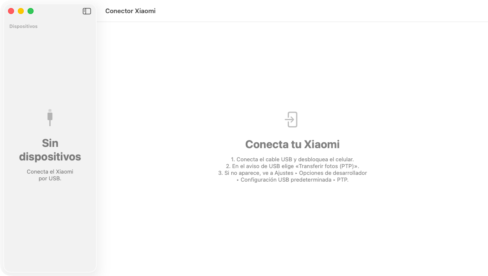
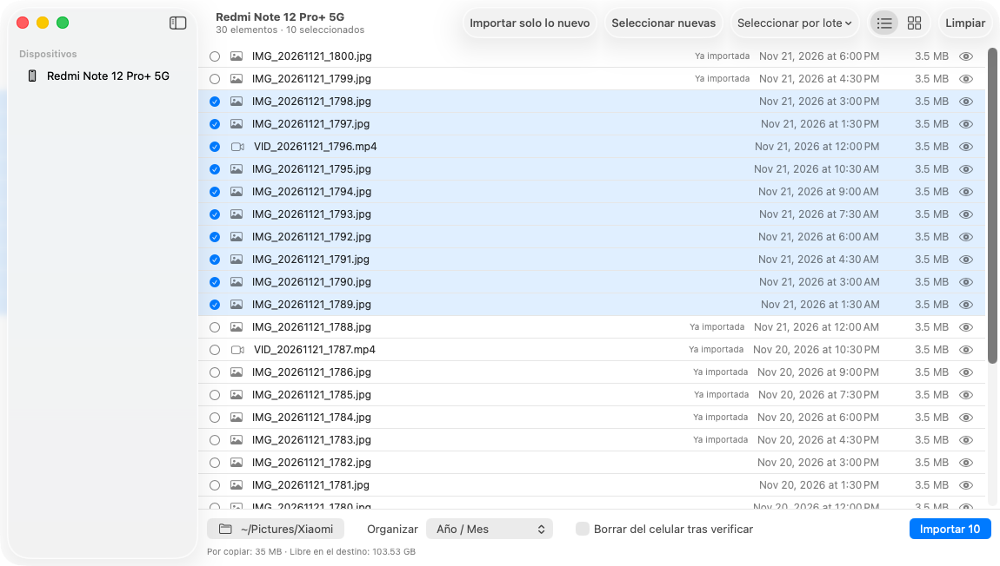
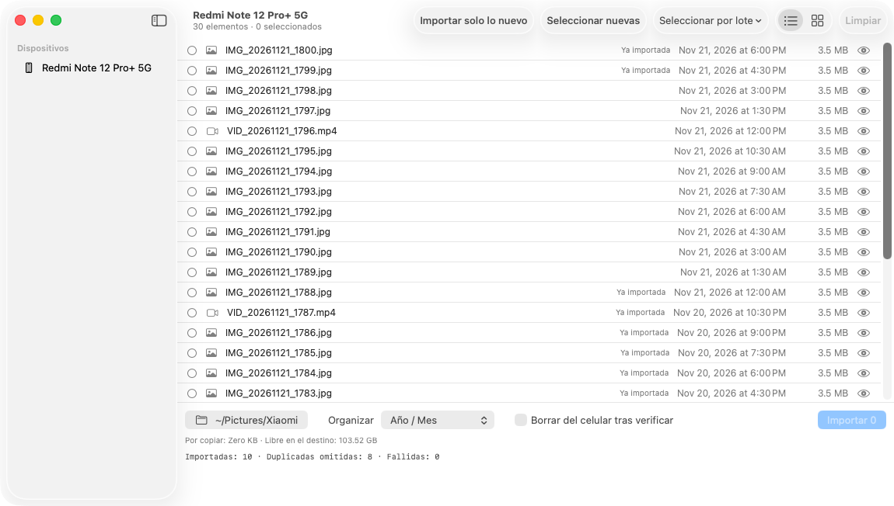

Manual de usuario · Importa las fotos de tu celular Xiaomi al Mac por cable USB
1. Qué es y qué necesitas
Conector Xiaomi es una aplicación nativa de macOS que lee la galería de un celular Xiaomi conectado por USB
y copia las fotos y los videos al Mac, organizados en carpetas por fecha. Evita duplicados: recuerda lo que ya
importaste y no lo vuelve a copiar.
Necesitas:
Un Mac con macOS 14 (Sonoma) o posterior.
Un celular Xiaomi, Redmi o Poco con Android. El proyecto se desarrolló pensando en el Redmi Note 12 Pro+ 5G (modelo 22101316UG).
Un cable USB que transfiera datos (algunos cables baratos solo cargan).
¿Por qué hay que usar el modo PTP?
macOS no entiende el modo de transferencia de archivos habitual de Android (MTP). Sí entiende el modo de
transferencia de fotos (PTP), que es el que usa esta aplicación.
2. Instalar la aplicación
Copia el archivo ConectorXiaomi.dmg al Mac y haz doble clic para abrirlo.
En la ventana que aparece, arrastra ConectorXiaomi hasta la carpeta Applications.
Expulsa la imagen de disco desde el Finder (botón de expulsar junto a «Conector Xiaomi»).
Primera apertura: aviso de macOS
La aplicación está firmada de forma «ad hoc», es decir, sin un certificado de desarrollador de Apple. Por eso
macOS la bloqueará la primera vez con un mensaje como «no se puede abrir porque no se puede verificar al
desarrollador». No es un virus: es el comportamiento normal del sistema con apps sin certificado de pago.
Desbloquéala con una de estas dos opciones:
Opción A · Desde Ajustes del Sistema (recomendada)
Abre Conector Xiaomi desde Applications. Saldrá el aviso de bloqueo; pulsa Hecho o Cancelar.
Ve a Ajustes del Sistema ▸ Privacidad y seguridad.
Baja hasta la sección «Seguridad». Verás un mensaje sobre «Conector Xiaomi» y el botón Abrir de todos modos. Púlsalo.
Escribe tu contraseña o usa Touch ID y confirma con Abrir.
Solo hace falta hacerlo una vez; después la app se abre con normalidad.
Este comando quita la marca de «archivo descargado» que provoca el bloqueo. Después abre la app con doble clic.
Sobre «clic derecho ▸ Abrir»
En macOS 14 y anteriores también funciona hacer clic derecho sobre la app y elegir Abrir. En macOS 15
(Sequoia) y posteriores ese atajo ya no salta el bloqueo, y hay que usar la opción A o la B.
3. Conectar el celular (modo PTP)
Conecta el celular al Mac con el cable USB.
Desbloquea el celular. Con la pantalla bloqueada, el Mac no puede leer las fotos.
En el celular aparecerá la notificación «Cargando este dispositivo por USB» o similar. Tócala y elige Transferir fotos (PTP).
Si no aparece la notificación, configura el modo de forma permanente:
Ajustes ▸ Opciones de desarrollador ▸ Configuración USB predeterminada ▸ PTP.
Si no ves «Opciones de desarrollador», actívalas en Ajustes ▸ Acerca del teléfono tocando siete veces el «Número de compilación».
Si el celular pregunta «¿Permitir que este equipo acceda a los datos del teléfono?», acepta.
Comprobación rápida
Abre Conector Xiaomi. En la barra lateral, bajo Dispositivos, debe aparecer el nombre de tu celular.
Si dice «Conecta el Xiaomi por USB», revisa la sección de solución de problemas.

Pantalla inicial: la app espera a que conectes el celular y recuerda los pasos para activar el modo PTP.
4. Importar fotos paso a paso
Elige el celular. Selecciónalo en la barra lateral. La app muestra «Abriendo sesión…» y luego «Leyendo fotos…» con un contador. Con miles de fotos puede tardar unos minutos.
Mira la galería. Por defecto verás una lista sin miniaturas, con el nombre, la fecha, el tamaño y si cada foto o video ya fue importado. Es la vista más rápida con bibliotecas muy grandes, porque no le pide nada al celular. Con el selector Lista / Miniaturas de la barra superior puedes cambiar a la cuadrícula de miniaturas; con miles de fotos esa vista es mucho más lenta.
Para ver una foto o un video, pulsa el icono del ojo de la fila o haz doble clic. En la vista de lista la app te avisa de que hay que descargar el archivo completo del celular y que puede demorar; la descarga empieza solo cuando pulsas Cargar vista previa. Mientras baja se muestra la miniatura, si existe. Pulsa Cerrar (o la tecla Esc) para volver. En los videos, la app descarga el archivo completo a una carpeta temporal y luego lo reproduce con controles de pausa y avance; el archivo temporal se borra al cerrar la vista previa. En la vista de miniaturas la vista previa carga de inmediato, sin aviso.
Selecciona qué importar.
Un clic en una fila de la lista, o en una miniatura, la selecciona (aparece una marca de verificación); otro clic la deselecciona. Puedes marcar tantas como quieras, una por una.
Las fotos ya importadas muestran «Ya importada» en la lista, o se ven atenuadas y con una flecha de descarga en las miniaturas.
Seleccionar por lote (barra superior): marca de una vez todas las fotos de un periodo. Ofrece Todo, Último mes, Últimos 3 meses, Último semestre, Último año, un botón por cada año que tenga fotos y «Rango de fechas…», donde eliges el día inicial y el final, ambos incluidos. El interruptor Omitir las ya importadas viene activado, así cada lote solo toma lo pendiente. Cada elección reemplaza la selección anterior. Es la forma recomendable de pasar una biblioteca enorme por tandas: elige un año, pulsa Importar y repite con el siguiente.
Seleccionar nuevas: marca de una sola vez todo lo que aún no has importado.
Limpiar: quita toda la selección.
Importar solo lo nuevo (barra superior): selecciona lo que aún no has importado y lo importa de una vez, sin más pasos. Es el atajo para el uso habitual.
Elige la carpeta de destino. Pulsa el botón con el icono de carpeta de la barra inferior. Por defecto es tu carpeta Imágenes.
Elige cómo organizar (ver siguiente sección).
Revisa el espacio. Bajo los controles aparece «Por copiar», el tamaño de lo seleccionado que aún no se ha importado, junto al espacio libre del disco de destino. Si lo seleccionado no cabe, el texto se pone en rojo y al pulsar Importar la app no copia nada y explica cuánto falta.
Pulsa «Importar N», donde N es el número de elementos seleccionados. Mientras copia, la barra muestra cuántos archivos van, los bytes copiados y un tiempo restante estimado (aparece después de unos segundos, cuando ya se puede medir la velocidad). Al final, el registro indica cuántas se importaron, cuántas se omitieron por duplicadas y cuántas fallaron.
Cancelar y reanudar (opcional). El botón Cancelar detiene la importación: el archivo en curso termina de copiarse y los siguientes quedan sin importar. Lo pendiente queda seleccionado; para reanudar, pulsa Importar otra vez y la app omite lo que ya se copió.

Vista de lista con diez elementos seleccionados (fila azul y marca de verificación). Los que dicen «Ya importada»
se copiaron antes. En la barra inferior están la carpeta de destino, el modo de organización, el interruptor de
borrado y el botón Importar. En la barra superior se ven los botones de selección, el menú «Seleccionar por lote» y
el selector de vista (lista o miniaturas). Si reduces la ventana, los botones que no caben se pliegan bajo el icono
«>>».

Al terminar, el registro inferior resume cuántas fotos se importaron, cuántas se omitieron por duplicadas y cuántas fallaron.
Sobre las imágenes de este manual
Las capturas las genera automáticamente la propia aplicación compilada en un Mac de GitHub, usando un celular y
fotos ficticias dibujadas por código. Sirven para ilustrar la interfaz; tus fotos reales aparecerán en lugar de estas.
5. Opciones de importación
Organizar (carpetas por fecha)
Opción
Resultado en el Mac
Año / Mes
Imágenes/2026/11/foto.jpg
Año / Mes / Día
Imágenes/2026/11/21/foto.jpg
Sin subcarpetas
Imágenes/foto.jpg (todo en la carpeta elegida)
La fecha que se usa es la de captura de cada foto, no la fecha en que la importas.
Detección de duplicados
La app guarda un índice de lo ya importado (archivo imported.json) y además comprueba si el archivo
ya existe en la carpeta de destino. Las fotos ya importadas aparecen marcadas como «Ya importada» al pasar el
cursor y se omiten, así que puedes importar el mismo celular muchas veces sin repetir archivos.
Verificación tras copiar y copia segura
Cada archivo se copia primero con la extensión .parte y solo recibe su nombre definitivo cuando su tamaño
coincide con el del original. Así, si se desconecta el cable a mitad de una foto, no queda en tu carpeta un archivo
incompleto con apariencia de bueno: el .parte se elimina y la foto cuenta como fallida. Las fotos fallidas
quedan seleccionadas para que las reintentes con un solo clic en Importar.
6. Borrar del celular tras importar
El interruptor Borrar del celular tras verificar está desactivado por defecto. Si lo activas,
después de importar la app elimina del celular solo los archivos que se copiaron y verificaron correctamente.
Precaución: el borrado no se puede deshacer
Los archivos borrados del celular no pasan por ninguna papelera. Antes de usar esta opción, prueba con una sola foto,
comprueba que se abre bien en el Mac y, mejor aún, ten una copia de seguridad adicional. Algunos celulares no permiten
borrar archivos por PTP; en ese caso la importación funciona, pero las fotos siguen en el celular.
Si cancelas una importación, la app no borra nada del celular; el borrado se hará cuando termines de importar todo.
7. Solución de problemas
Síntoma
Qué probar
El celular no aparece en la barra lateral
Desbloquea el celular. Confirma que el modo USB es Transferir fotos (PTP). Cambia de cable o de puerto
USB (evita concentradores). Desconecta y vuelve a conectar. Cierra otras apps que usen el celular, como
Captura de Imagen o Fotos, y la app «Android File Transfer».
Aparece el celular pero la galería está vacía o dice error
Mantén el celular desbloqueado y acepta el permiso de acceso a datos. Si persiste, vuelve a conectar y elige el celular otra vez.
Las miniaturas tardan o no cargan
Con miles de fotos o con fotos de 200 MP la carga es lenta. Cambia a la vista de Lista, que no descarga miniaturas, y espera a que termine el contador de «Leyendo fotos…».
La vista previa de una foto no carga o dice «No se pudo cargar»
Comprueba que el celular siga conectado y desbloqueado, y vuelve a intentarlo. Con una biblioteca muy grande el celular responde despacio y la descarga puede demorar. Si no necesitas verla, puedes importarla sin vista previa.
El video tarda en empezar a reproducirse
La app descarga el video completo antes de reproducirlo, así que los videos largos o en 4K tardan. Espera a que termine «Descargando video…».
«Espacio insuficiente en el destino»
Lo seleccionado no cabe en el disco. Libera espacio, elige otra carpeta de destino (por ejemplo, un disco externo) o importa por tandas.
Se cortó el cable o cancelé a mitad de la importación
Vuelve a conectar y pulsa Importar solo lo nuevo, o Importar si lo pendiente sigue seleccionado. No se repite lo ya copiado.
macOS pide permiso para acceder a una carpeta
Es un aviso normal al importar a Escritorio, Documentos o discos externos. Acepta para continuar.
La app no abre: «no se puede verificar al desarrollador»
Revisa el registro de importación. Comprueba el espacio libre en el Mac y vuelve a importar solo las que faltan con Seleccionar nuevas.
8. Limitaciones conocidas
Esta versión se compiló, pero todavía no se ha probado extensamente con un celular real. Haz una prueba con pocas fotos antes de importar toda la galería.
Para ver un video, la app lo descarga entero antes de reproducirlo.
Cancelar espera a que termine el archivo en curso; no interrumpe una copia a medias.
La vista previa completa de fotos de 200 MP puede ser lenta, y con bibliotecas muy grandes el celular responde despacio.
La vista de lista y la selección por lotes se compilaron pero todavía no se han probado con un celular real ni con miles de fotos.
El borrado en el celular depende de que el modelo lo permita por PTP.
La app no está firmada con un certificado de Apple, por lo que macOS pide aprobarla manualmente la primera vez.